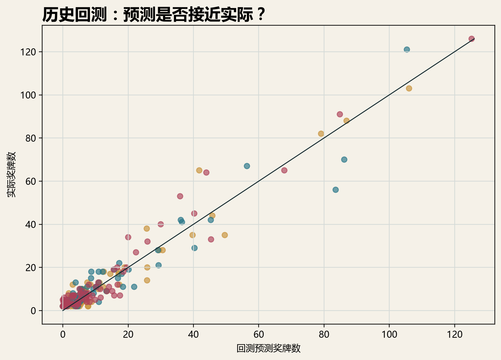
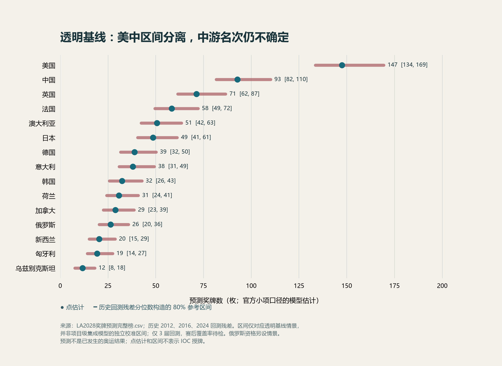

先分清两套模型
两个 MAE 的观察单位不同，不能直接比较大小。预测榜中的不确定性区间来自历史基线回测残差，不应直接当作集成模型的校准区间。
切换方法，核对假设
数字要接受回测
基线：跨届总量回测
使用2012、2016、2024历史回测残差。全体代表团平均绝对误差 2.74 枚；实际不少于5枚的代表团为 4.57 枚。残差的10%和90%分位形成基线的80%区间。
集成：2024项目级留出
2024届不参加项目级模型训练，以代表团×体育大类为单位，留出回测MAE为 0.52 行。这反映项目结构预测误差，不等同于官方小项奖牌误差。


让每一项增量都有出处
45%透明历史基线
45%项目级随机森林与梯度提升
10%新增运动排名信号
项目级输入包括前两届表现、趋势、代表团整体强度和项目竞争规模。新增运动使用五项单项组织的排名或竞技代理快照。主场项以赛前两届走势匹配非主办代表团，构造加权合成对照；历史效应中位数为 18.0%，模型采用其55%作为收缩后的情景调整。
主办权并非随机。合成对照提供有条件的反事实参考，不能证明严格因果效应。2028资格、伤病、名单和项目格局仍会改变实际结果。
2028之后如何判分
数量与排序
分别计算总奖牌和项目级的MAE、RMSE，检验斯皮尔曼等级相关与前十命中率。
区间与机制
检查80%区间覆盖率；拆分新增项目、主场和历史趋势的实际贡献，对比事前假设。
原始数据、代码与完整自动验收随交付包提供。官方项目数与新增运动依据见底稿列出的国际奥委会来源。
赛前不知道最终奖牌池
用此前届次估计目标届奖牌规模，主场效应只由此前案例估计；资格变动作为条件情景，不作为事实。2024估计池比最终池少63枚，说明使用实际规模的回放会低估预测难度。